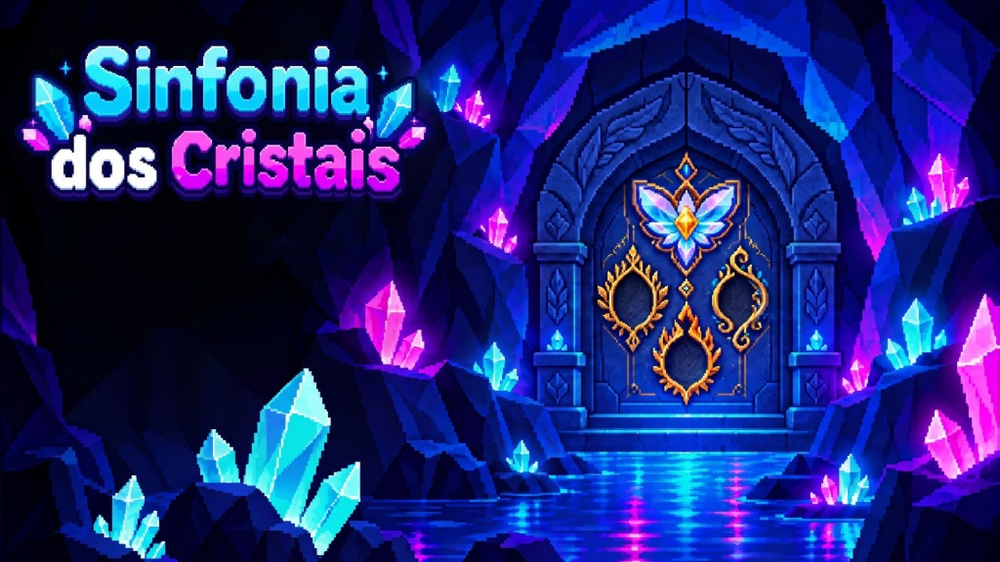

Sua jornada começa com um pequeno brilho.
Escolha uma luz no caminho.
Tab focaliza; Espaço seleciona, conecta ou cancela; setas movem; C corta; Q divide. Focalize a alça da equação e use as setas para mover o conjunto.
Crystal Math Mania
Conceito e direção: projeto da turma.Desenvolvimento e arte original: assistência do Codex.
Apresentação final: “O que um cristal pode fazer”, áudio fornecido pelo projeto.Durante as fases: composição interativa sintetizada.
Física: Matter.js, licença MIT.Inspirado nas gemas e nos biomas do Brasil, com elementos de fantasia.
Seu progresso foi guardado neste navegador. Você pode fechar esta aba.